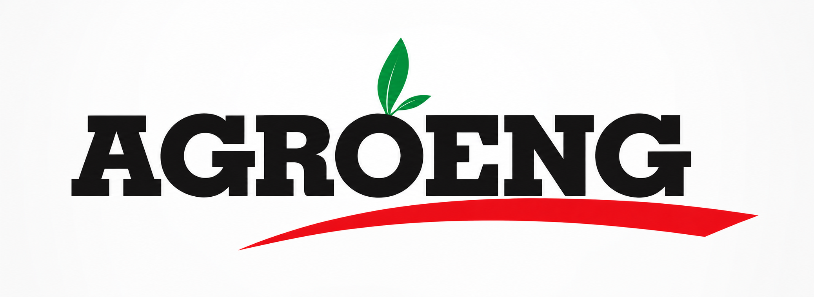
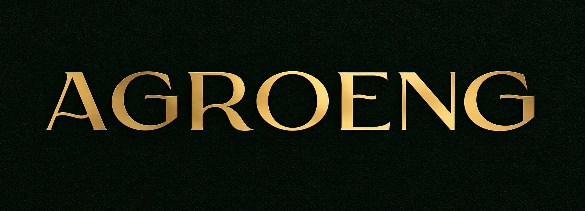
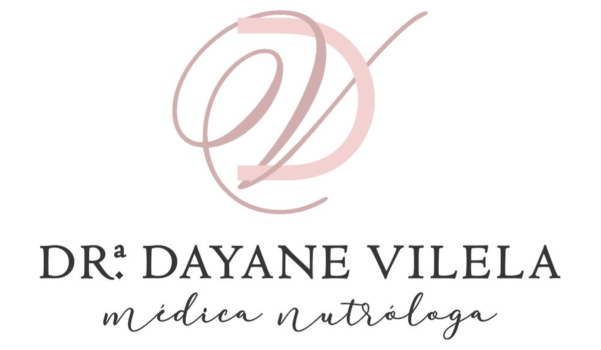
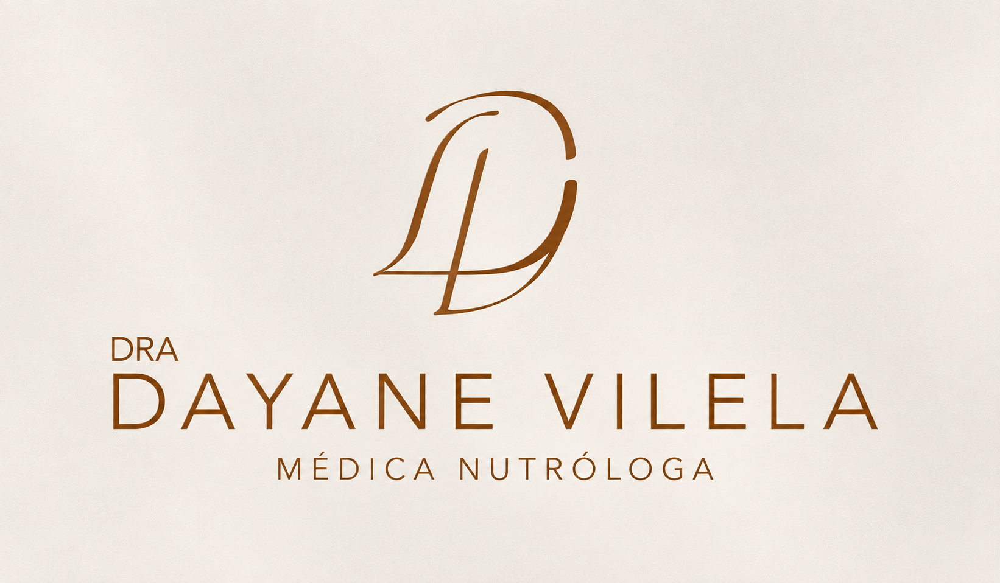
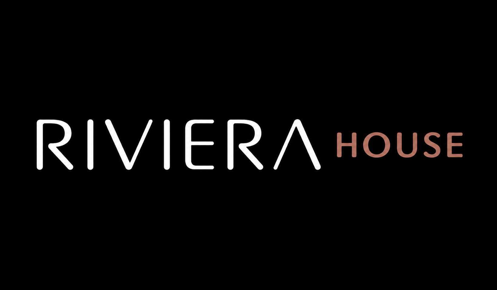
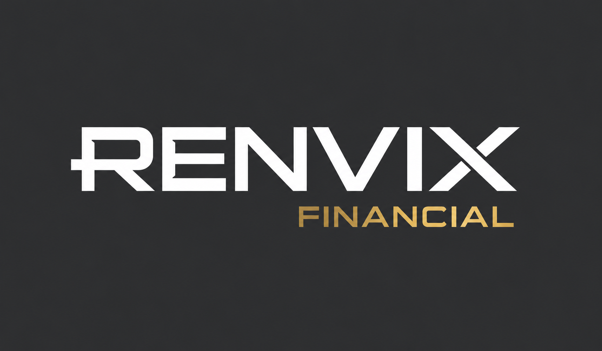
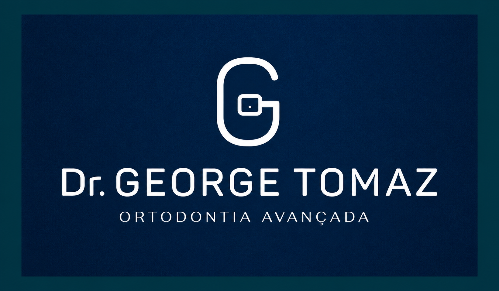
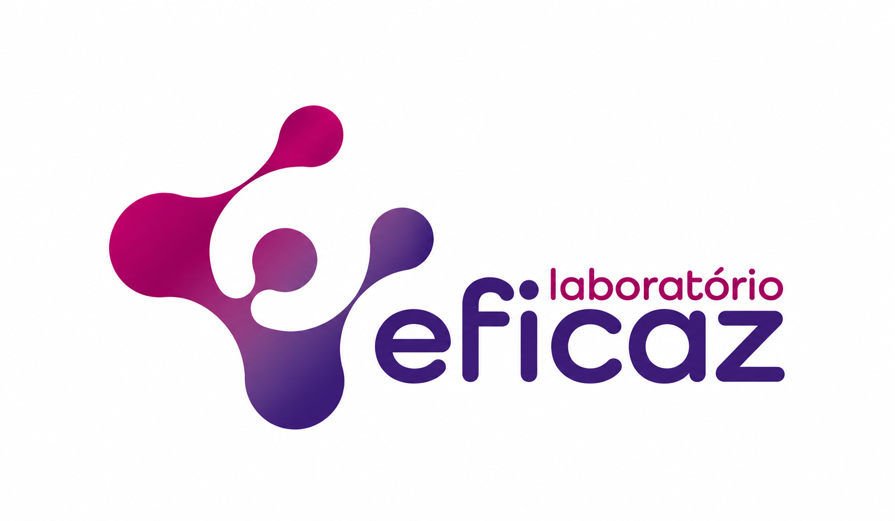

Logo amadora
Uma primeira impressão frágil reduz a confiança antes da conversa começar.
Gabriel Maker — Design, logos & identidade visual
Crio logos e identidades visuais para negócios que querem transmitir mais confiança, coerência e valor em cada ponto de contato.
Logo • Identidade visual • Redesign • Social media kit
Percepção importa
Muitos negócios entregam bons produtos e serviços, mas perdem valor porque a identidade visual parece improvisada, antiga ou desconectada do que a empresa realmente oferece.
Uma primeira impressão frágil reduz a confiança antes da conversa começar.
Cores, fontes e peças sem padrão fazem a marca parecer desorganizada.
O público sente quando a apresentação não acompanha a qualidade do serviço.
Sem personalidade visual, a marca vira só mais uma opção no feed.
Antes e depois
Um redesign bem feito pode deixar o negócio mais confiável, atual e alinhado com o público certo.
Reposicionamento visual para uma empresa de paisagismo
Atualização visual para fortalecer a percepção de valor da marca, trazendo uma identidade mais sofisticada, memorável e alinhada a um posicionamento premium.


Identidade visual para médica nutróloga
Reposicionamento visual para uma marca pessoal na área da saúde, trazendo mais sofisticação, leveza e profissionalismo para a identidade da Dra. Dayane Vilela.


Serviços
Símbolo, assinatura e variações pensadas para uso real.
Sistema de cores, tipografia e elementos para posicionar a marca.
Guia objetivo para aplicar a identidade com consistência.
Templates e artes editáveis para presença visual no Instagram.
Cartões, etiquetas, apresentações e peças para atendimento.
Atualização visual mantendo o que já funciona na percepção do público.
Portfólio
Identidade visual para o paisagismo
Branding • Redesign • Identidade visualIdentidade visual para médica nutróloga
Branding • Saúde • Marca pessoal
Identidade visual para o segmento de móveis e interiores. Marca desenvolvida para o universo da casa e dos interiores, com uma identidade sofisticada e acolhedora, construída para transmitir liberdade, confiança e credibilidade.
Branding • Móveis & Interiores • Identidade Visual
Identidade visual para o segmento financeiro e de investimentos. Identidade desenvolvida para uma marca do mercado financeiro, construída para transmitir credibilidade, confiança, transparência e expertise, com uma linguagem premium ligada a investimentos, multiplicação e expansão de capital.
Branding • Financeiro • Identidade Visual
Identidade visual para ortodontia avançada. Identidade desenvolvida para um especialista em ortodontia avançada, com uma linguagem visual sóbria e profissional, construída para transmitir profissionalismo, exclusividade, seriedade e alto padrão de atendimento.
Branding • Saúde • Ortodontia • Identidade Visual
Identidade visual para laboratório de análises clínicas. Identidade desenvolvida para um laboratório de análises clínicas, unindo referências do universo hematológico a uma linguagem visual acolhedora e profissional, com foco em transmitir confiança, atendimento, conforto e agilidade.
Branding • Saúde • Análises Clínicas • Identidade VisualEtapa 01
Tudo começa entendendo o negócio, o público, os objetivos da marca, as referências e a percepção que ela precisa transmitir.
Resultado da etapa: uma direção clara antes de qualquer decisão visual.
Etapa 02
Analiso o mercado, concorrentes, referências e padrões visuais para entender o que já existe e onde a marca pode construir uma presença própria.
Resultado da etapa: menos soluções genéricas e mais intenção.
Etapa 03
A partir da pesquisa, nasce a ideia central que orienta forma, cor, tipografia, personalidade e linguagem visual da marca.
Resultado da etapa: uma identidade com sentido, não apenas estética.
Etapa 04
A direção criativa se transforma em logo, variações, sistema visual, paleta, tipografia e aplicações principais.
Resultado da etapa: uma identidade visual sólida e consistente.
Etapa 05
A identidade é apresentada de forma organizada, com explicação do conceito, decisões visuais e aplicações que ajudam a visualizar a marca funcionando no mundo real.
Resultado da etapa: mais clareza e segurança na aprovação.
Etapa 06
Os arquivos finais são organizados, nomeados e preparados para diferentes usos, tanto no digital quanto no impresso.
Resultado da etapa: uma marca pronta para ser usada com consistência.
Pacotes
Depoimentos
“Eu já tinha uma ideia do que queria, mas o Gabriel conseguiu transformar em algo muito mais profissional.”Empreendedora local
“Depois da identidade visual, meus materiais ficaram muito mais organizados e fáceis de apresentar.”Prestador de serviço
“A marca ficou com a cara do meu negócio. Não foi só uma logo bonita, teve conceito por trás.”Dono de pequeno negócio
“O processo foi claro do começo ao fim. Recebi os arquivos organizados e prontos para usar.”Cliente de identidade visual
Aplicações
FAQ
Depende do escopo, mas projetos de logo costumam partir de alguns dias úteis após o briefing aprovado.
As rodadas de ajuste são combinadas no orçamento para manter o processo claro e organizado.
Sim. A entrega inclui arquivos finais organizados em formatos adequados para uso digital e impressão.
Crio desde logos essenciais até sistemas completos de identidade visual e aplicações de marca.
Sim. A identidade pode incluir versões e materiais pensados para redes sociais.
Chame no WhatsApp para iniciar o briefing e receber uma proposta alinhada ao seu projeto.
Seu próximo projeto
Conte um pouco sobre sua marca, seu momento atual e o que você precisa. A partir disso, construímos uma direção visual pensada para o seu negócio, sem pacotes genéricos ou soluções copiadas.
Conte sobre sua ideia. Você recebe uma resposta personalizada.